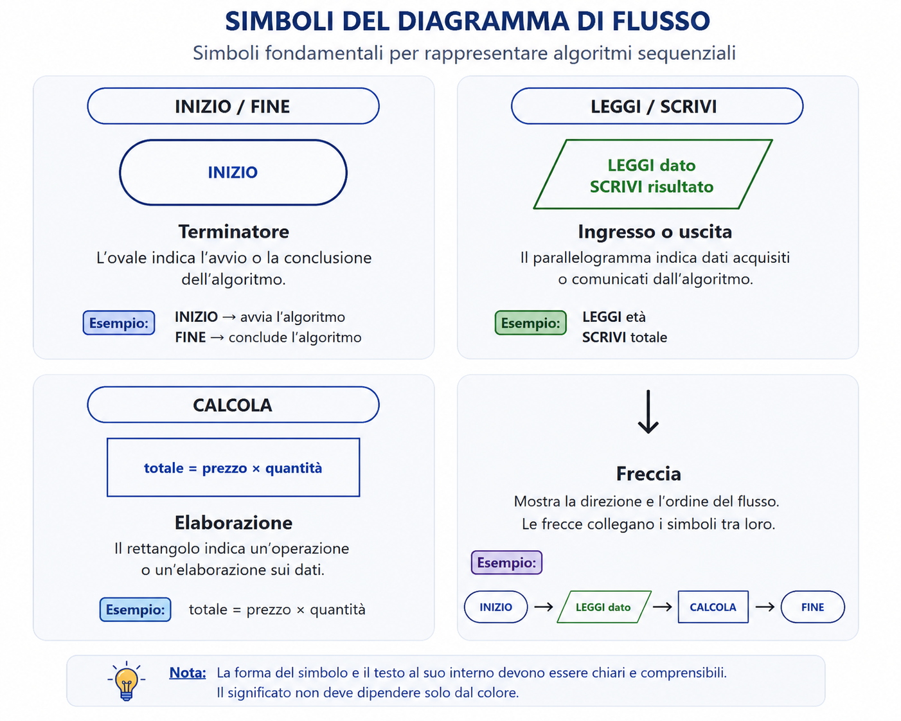
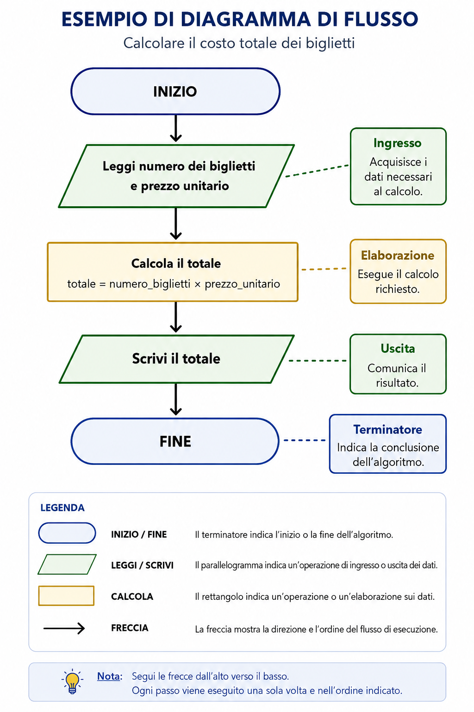

Prima di iniziare: dal problema ai passi
Un problema presenta un obiettivo. Durante l'analisi individuiamo i dati di ingresso, il risultato atteso e gli eventuali vincoli. Costruiamo poi un algoritmo formato da istruzioni ordinate, finite, chiare ed eseguibili.
Dopo l'esecuzione controlliamo che il risultato ottenuto corrisponda a quello atteso. Se un passaggio manca, è ambiguo o si trova nel posto sbagliato, il procedimento può non funzionare.
Obiettivi della lezione
Al termine dovrai saper rappresentare e spiegare un semplice algoritmo sequenziale.
Una strada, tre modi per descriverla
Immagina di dover spiegare a un compagno come raggiungere la biblioteca. Puoi raccontare il percorso a parole, scrivere un elenco ordinato di indicazioni oppure disegnare una mappa con frecce.
La strada non cambia: cambia soltanto il modo in cui la comunichi. Accade lo stesso con un algoritmo.
L'algoritmo è il procedimento. La rappresentazione è il modo scelto per comunicarlo. Rappresentazioni diverse devono conservare lo stesso ordine logico e produrre lo stesso risultato.
Tre rappresentazioni dello stesso algoritmo
Linguaggio naturale
Usa frasi comuni. È immediato, ma può diventare lungo o ambiguo e può essere formulato in modi diversi.
Pseudocodice
Usa parole convenzionali e istruzioni brevi. È leggibile e indipendente da uno specifico linguaggio di programmazione.
Diagramma di flusso
Usa blocchi collegati da frecce. Rende visibili l'ordine e la funzione di ogni passaggio.
Lo pseudocodice
Lo pseudocodice descrive l'algoritmo con istruzioni sintetiche. Non possiede una sintassi universale e rigida: è una convenzione pensata per essere comprensibile e controllabile.
INIZIO- Avvia l'algoritmo.
LEGGI- Acquisisce i dati di ingresso.
CALCOLA- Esegue un'elaborazione.
SCRIVI- Comunica il risultato.
FINE- Conclude l'algoritmo.
I simboli del diagramma di flusso
In questa lezione usiamo soltanto i simboli necessari alla struttura sequenziale. Forma, testo e descrizione rendono ogni funzione riconoscibile anche senza il colore.

Esistono altri simboli, che verranno studiati nelle lezioni successive.
Esempio guidato: il costo dei biglietti
Situazione: calcolare il costo totale conoscendo il numero dei biglietti e il prezzo di ciascun biglietto.
1. Linguaggio naturale
- Acquisire il numero dei biglietti.
- Acquisire il prezzo di un biglietto.
- Calcolare il costo totale.
- Comunicare il risultato.
2. Pseudocodice
INIZIO
LEGGI numero_biglietti
LEGGI prezzo_unitario
CALCOLA totale = numero_biglietti × prezzo_unitario
SCRIVI totale
FINE3. Diagramma di flusso

📐 Attività guidata — Area del rettangolo
Situazione: calcolare l'area conoscendo base e altezza.
- Riconosci le funzioni.
Base e altezza sono ingressi; il calcolo è l'elaborazione; l'area è l'uscita.
- Completa lo pseudocodice.
INIZIO LEGGI ______ LEGGI ______ CALCOLA area = ______ × ______ SCRIVI ______ FINE - Ordina i blocchi.
FINE · Scrivi area · Leggi base e altezza · INIZIO · Calcola area.
- Spiega il flusso.
Segui le frecce e nomina ingresso, elaborazione e uscita.
Apri la soluzione
INIZIO
LEGGI base
LEGGI altezza
CALCOLA area = base × altezza
SCRIVI area
FINEOrdine dei blocchi: INIZIO → Leggi base e altezza → Calcola area → Scrivi area → FINE.
Attività autonome
1. Spesa per i quaderni
Calcola la spesa complessiva conoscendo il numero dei quaderni e il prezzo unitario.
- Scrivi il procedimento in linguaggio naturale.
- Trasformalo in pseudocodice.
- Disegna il diagramma usando i simboli corretti.
- Controlla con 4 quaderni da 2 euro.
Controlla una possibile soluzione
Naturale: acquisisci quantità e prezzo, calcola il prodotto, comunica la spesa.
INIZIO
LEGGI numero_quaderni
LEGGI prezzo_unitario
CALCOLA spesa = numero_quaderni × prezzo_unitario
SCRIVI spesa
FINEIl diagramma contiene terminatore, ingresso, elaborazione, uscita e terminatore. Con 4 e 2 il risultato è 8 euro.
2. Durata complessiva di tre attività
Conosci la durata di studio, esercizio e ripasso. Calcola il tempo complessivo.
- Individua dati e risultato.
- Ordina acquisizione, calcolo e comunicazione.
- Scegli il simbolo per ogni passaggio.
- Presenta la soluzione a voce in circa un minuto.
Controlla una possibile soluzione
Gli ingressi sono le tre durate; il risultato è la durata totale. Dopo INIZIO si leggono le durate in un parallelogramma, si calcola la somma in un rettangolo, si scrive il totale in un parallelogramma e si conclude con FINE.
Errori frequenti
- Confondere l'algoritmo con il suo diagramma.
- Dimenticare
INIZIOoFINE. - Usare un rettangolo per un dato in ingresso o un parallelogramma per un calcolo.
- Disporre i passaggi nell'ordine errato o omettere le frecce.
- Inserire frasi troppo lunghe nei blocchi.
- Aggiungere dati estranei al problema.
- Creare rappresentazioni che non descrivono più lo stesso algoritmo.
Preparazione al colloquio orale
Rispondi prima con una frase breve, poi aggiungi l'esempio dei biglietti.
Che differenza c'è tra algoritmo e rappresentazione?
L'algoritmo è il procedimento; la rappresentazione è il modo usato per comunicarlo.
Quali sono i principali modi studiati?
Linguaggio naturale, pseudocodice e diagramma di flusso.
Che cos'è lo pseudocodice?
Una rappresentazione convenzionale con istruzioni brevi, leggibile e indipendente da uno specifico linguaggio.
Perché non è un vero linguaggio di programmazione?
Non ha una sintassi universale rigida e non viene eseguito direttamente dal computer.
Quali simboli abbiamo usato?
Terminatore, parallelogramma, rettangolo e freccia.
Che cosa rappresenta il rettangolo?
Un'elaborazione, per esempio un calcolo.
Che cosa rappresenta il parallelogramma?
L'ingresso o l'uscita dei dati.
A che cosa servono le frecce?
Indicano la direzione e l'ordine di esecuzione.
Come controlliamo la corrispondenza?
Confrontiamo tutti i passaggi e verifichiamo che compaiano nello stesso ordine e conducano allo stesso risultato.
Quali vantaggi offre il diagramma?
Rende visibili il flusso, l'ordine e la funzione dei passaggi.
🧠 Autovalutazione finale
Prova a rispondere senza rileggere, poi apri le indicazioni.
So distinguere algoritmo e rappresentazione?
Se sai spiegare la differenza usando l'esempio della strada, l'obiettivo è raggiunto.
So trasformare una sequenza nelle tre forme?
Controlla che ogni passaggio compaia nello stesso ordine.
So scegliere i simboli corretti?
Devi riconoscere inizio/fine, ingresso/uscita, elaborazione e direzione.
So individuare un errore nel flusso?
Verifica dati mancanti, blocchi invertiti, simboli errati e frecce assenti.
Glossario essenziale
- Rappresentazione
- Modo con cui un algoritmo viene comunicato.
- Linguaggio naturale
- Descrizione con parole e frasi comuni.
- Pseudocodice
- Descrizione convenzionale con istruzioni sintetiche.
- Diagramma di flusso
- Schema con blocchi collegati da frecce.
- Blocco
- Simbolo che rappresenta una funzione.
- Sequenza
- Istruzioni eseguite una dopo l'altra nell'ordine indicato.
Riepilogo finale
🎒 Lo zaino dello studente
Le idee essenziali da portare al colloquio orale.
✅ Sintesi
- Algoritmo e rappresentazione non sono la stessa cosa.
- Lo stesso algoritmo può essere scritto in forme diverse.
- Pseudocodice e diagramma conservano lo stesso ordine logico.
- Ogni simbolo del diagramma ha una funzione.
- Le frecce mostrano il verso di esecuzione.
- In questa fase usiamo soltanto algoritmi sequenziali.
📝 Parole chiave
- rappresentazione
- linguaggio naturale
- pseudocodice
- diagramma di flusso
- blocco
- freccia
- ingresso
- elaborazione
- uscita
- sequenza
❓ Controllo rapido
- I passaggi corrispondono?
- L'ordine è invariato?
- I simboli sono corretti?
- Le frecce indicano il verso?
- Il risultato rimane lo stesso?
⏱️ Ripasso in 2 minuti
Disegna i quattro simboli, spiegane la funzione e racconta il flusso dei biglietti senza leggere.
Allenamento distribuito
Missione di ripasso · 10 minuti al giorno
Spiega la differenza tra algoritmo e rappresentazione.
Riscrivi lo pseudocodice dei biglietti.
Disegna e nomina i quattro simboli.
Trasforma una semplice sequenza nelle tre forme.